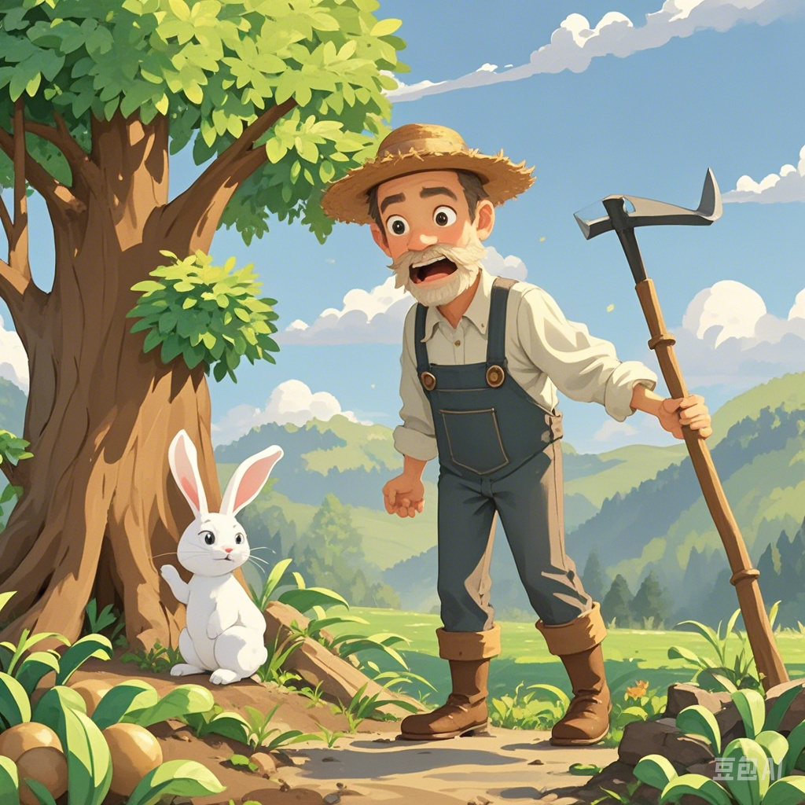
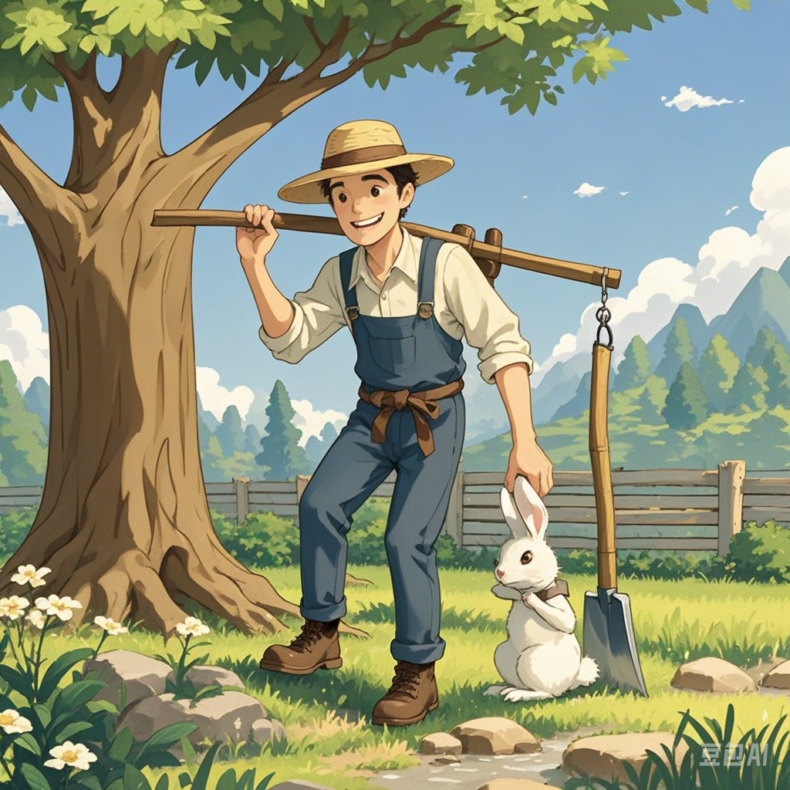
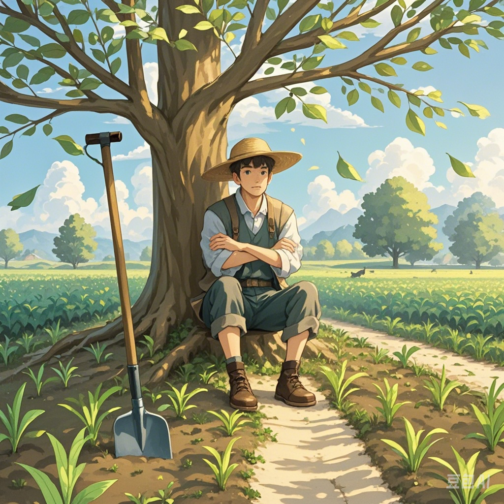
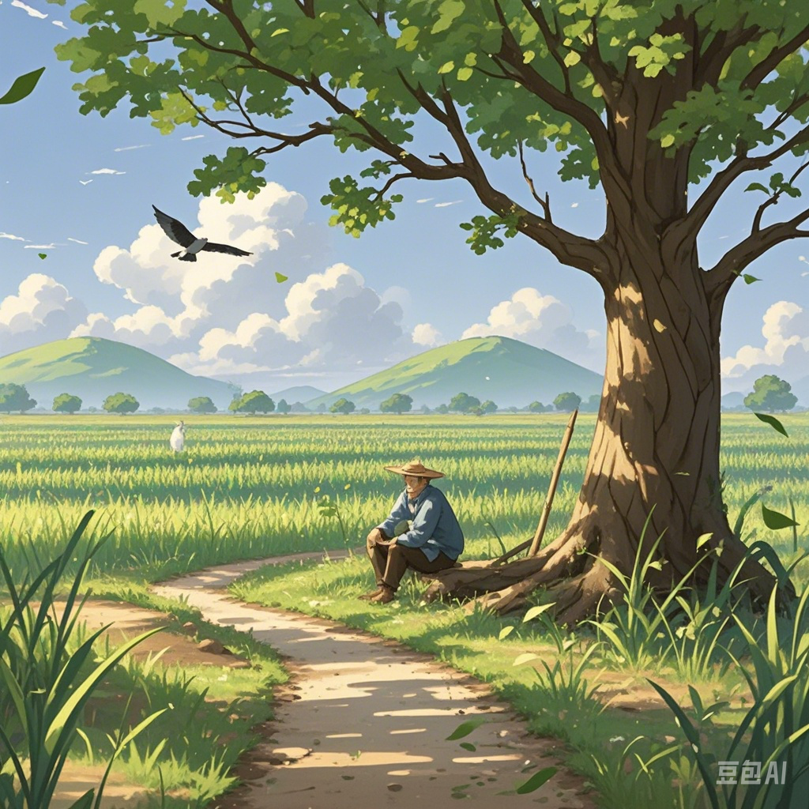

简介
守株待兔是一种古代的寓言故事，讲述了一个人在树下等待一只兔子从树上掉下来的故事。这个故事寓意着不劳而获、坐享其成的想法是不切实际的。
生成图片
关键帧1：农夫劳作
阳光明媚的田野上，一位头戴斗笠、身着粗布衣裳的农夫，手持锄头在自家田地里辛勤地劳作着。他弯着腰，一下一下地锄着地，身旁是一片刚种下不久，嫩绿嫩绿的庄稼苗，远处还有几棵大树矗立着。
关键帧2：兔子撞树
突然，一只野兔从旁边的草丛中惊慌失措地窜了出来，它的眼睛瞪得大大的，耳朵高高竖起，没命地奔跑着。可能是受到了什么惊吓，在经过田地边的一棵大树时，它直直地撞在了树干上，“砰”的一声，然后便倒地不动了。
关键帧3：农夫发现兔子
正在劳作的农夫听到动静，抬起头来，惊讶地看到了撞在树上的野兔。他先是一愣，随后脸上露出惊喜的神情，赶紧扔下手中的锄头，朝大树跑去。 - **台词/音效**：农夫扔下锄头的“哐当”声，急促的脚步声。

关键帧4：农夫拎兔回家
农夫跑到大树下，弯腰捡起已经死去的野兔，拎着它的耳朵，脸上满是得意的笑容。然后扛着锄头，带着野兔，哼着小曲儿，慢悠悠地往家的方向走去。

关键帧5：农夫守株
第二天，农夫没有像往常一样去田里劳作，而是早早地来到了昨天兔子撞树的那棵大树下。他靠着树干坐下，双手抱胸，眼睛紧紧盯着前方的小路，期待着再有兔子撞上来，身旁的锄头随意地扔在一边，庄稼地里的苗因为无人照料，显得有些蔫蔫的。

关键帧6：田地荒芜，农夫依旧等待
日子一天天过去，农夫依旧每天守在大树下，可再也没有兔子出现。此时的画面中，田地已经长满了杂草，庄稼苗都枯萎死掉了，而农夫还是那副呆呆的样子，望着小路，眼神中渐渐有了迷茫和懊悔，但仍然固执地坐在那里等待着。

生成视频
相关词汇